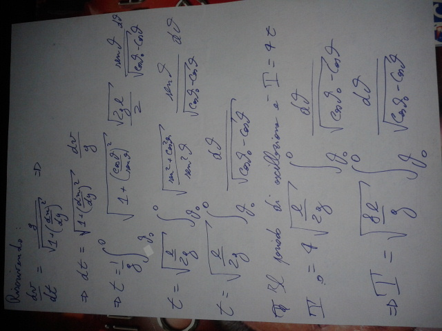
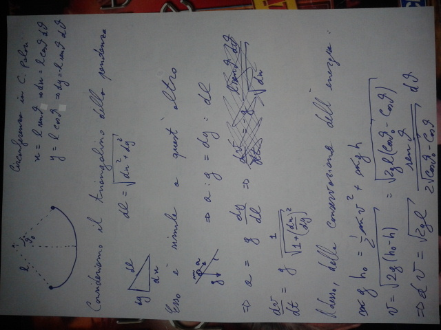
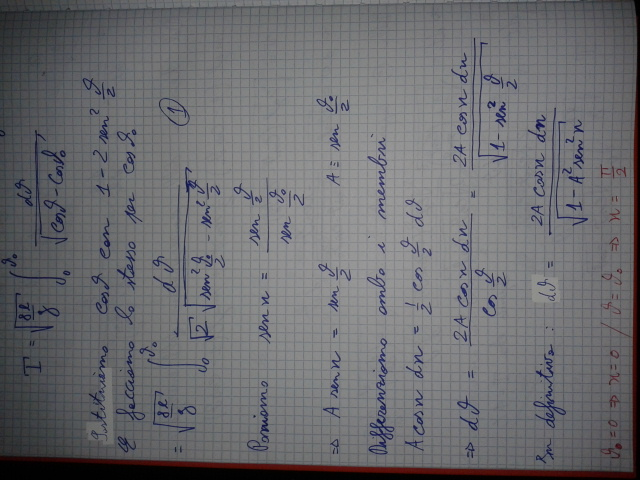
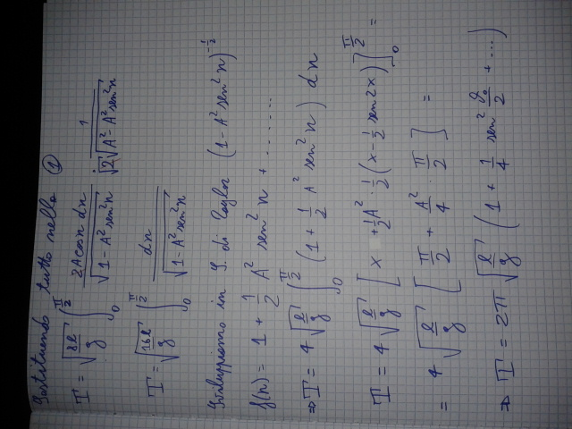

phyknight5 ago 2015, 18:28
La staffetta sembra essere morta...probabilmente per colpa del mio problema, quindi ne propongo un altro, più fattibile, scritto meglio e anche più importante.
1)Dimostrare che l'espressione esatta per il periodo di un pendolo di lunghezza \(l\) e ampiezza "non piccola" \(\theta_0\) è \(T=\displaystyle\sqrt\frac{8l}{g}\displaystyle\int_0^{\theta_0}\displaystyle\frac{d\theta}{\sqrt{cos\theta-cos\theta_0}}\)
2)Trovare un'approssimazione per \(T\) al second'ordine (ma anche a ordini successivi se volete farvi male) :D
(Per la seconda parte potrebbe essere utile scrivere tutto in funzione dei seni, e usare \(sinx=\displaystyle\frac{sin\frac{\theta}{2}}{sin\frac{\theta_0}{2}}\) )
gluonstrongforce5 ago 2015, 18:59
Metto le foto perchè sono pigro
-
Allegati
-

- 20150805_185815.jpg (104.45 KiB) Visto 6895 volte
-

- 20150805_185806.jpg (112.76 KiB) Visto 6895 volte
gluonstrongforce5 ago 2015, 19:09
Il due non lo so
phyknight6 ago 2015, 9:21
Sapevo che avresti risposto tu...ho avuto l'idea di mettere questo problema vedendo il tuo piano inclinato curvo (che era un caso particolare di pendolo) :lol: :lol:
Solo due cose:
scrivendo una soluzione definisci meglio quello che usi (il "triangolino della pendenza" mi ha fatto pensare non poco ;) )
e poi, quando fai l'integrale alla fine tu lo fai da \(\theta_0\) a \(0\), ma la funzione \(\displaystyle\frac{1}{\sqrt{cosx}}\) è crescente tra \(0\) e \(\displaystyle\frac{\pi}{2}\), quindi dovresti metterci il segno meno...o meglio girare l'integrale (come nel testo del problema)
Per il punto 2 sostituisci al posto dei coseni i seni degli angoli/2...usa la sostituzione che ti ho dato nel testo
E poi è il dominio delle approssimazioni, scegli tu come/dove/quando farle, e fai venire qualcosa al posto dell'integrale che dipende solo da \(\theta_0\)
gluonstrongforce6 ago 2015, 16:43
Grazie per i consigli. Per il punto 2, mettendo da parte che ultimamente sono più rimbambito che mai, non riesco a portare tutto sotto un' unica variabile, nel senso che theta ritorna quando sostituisco il de theta.
phyknight9 ago 2015, 10:41
qualche hint per il punto 2:
hint 0: si fa la sostituzione con \(\sin x\) che ho messo nel testo e si ottiene qualcosa con \(x\), ma in \(d\theta\)
hint 1: quando si trova il \(d\theta\) ci sono termini in \(\theta\)...conviene scrivere \(\cos\frac{\theta}{2}\) in funzione di \(\sin\frac{\theta}{2}\), e quindi in funzione di \(\sin\frac{\theta_0}{2}\) e \(\sin x\)
Fatto questo si arriva a qualcosa che dipende solo da \(x\) e \(\theta_0\), e si fa la prima approssimazione
gluonstrongforce9 ago 2015, 19:22
E finalmente!!!!
-
Allegati
-

- 20150809_191847.jpg (137.67 KiB) Visto 6803 volte
-

- 20150809_191853.jpg (129.19 KiB) Visto 6803 volte
phyknight9 ago 2015, 20:38
ok a te il prossimo problema :)
Ultima cosa da dire: se \(\theta_0 \ll 1\) puoi scriverlo anche come \(T=2\pi\sqrt\frac{l}{g}(1+\frac{\theta_0^2}{16})\) che è molto più disegnabile in caso serva un grafico ;)
gluonstrongforce10 ago 2015, 14:30
Che onore proseguire la staffetta!!